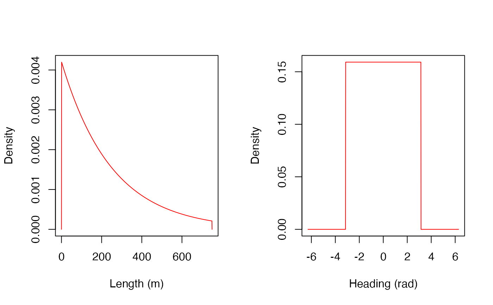
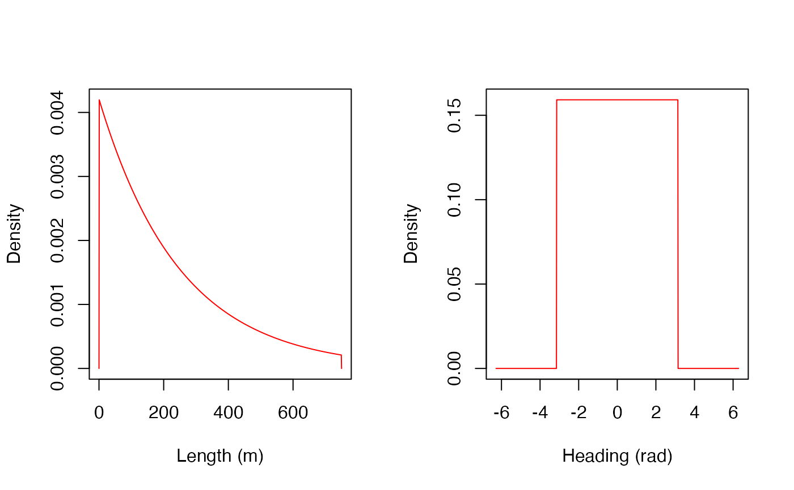

Usage
# S3 method for class 'ModelMoveXY'
plot(x, .panel_length = list(), .panel_heading = list(), .par = list(), ...)
# S3 method for class 'ModelMoveXYZ'
plot(
x,
.panel_length = list(),
.panel_heading = list(),
.panel_z = list(),
.par = list(),
...
)
# S3 method for class 'ModelMoveCXY'
plot(
x,
.panel_length = list(),
.panel_heading_delta = list(),
.par = list(),
...
)
# S3 method for class 'ModelMoveCXYZ'
plot(
x,
.panel_length = list(),
.panel_heading_delta = list(),
.panel_z_delta = list(),
.par = list(),
...
)Arguments
- x
A
ModelMove-class object from amodel_move_*()function (e.g.,model_move_xy().- .panel_length, .panel_heading, .panel_heading_delta, .panel_z, .panel_z_delta
Panel properties:
- .par
Graphical parameters:
- ...
Additional arguments, passed to
plot(), which affect all panels;
Value
The functions produce a plot. invisible(NULL) is returned.
Details
For each in-built ModelMove-class (e.g., ModelMoveXY), a corresponding plot() method is provided that plots the component probability-density distributions (e.g., the distribution of step lengths and turning angles) for any model instance. Under default options, a multi-panelled plot is produced, with one panel for each model dimension (e.g., the step length and the heading). Use .panel_* arguments to customise individual panels, .par to set graphical parameters and ... to customise all panels. Set .panel_* xlim to specify the x-axis range over which distributions are shown. If unspecified, probability density is plotted along a predefined range or from the 0.0001 to 0.9999 quantiles of the distribution.
See also
Use sim_path_walk() to visualise realisations of a movement model (i.e., trajectories).
Examples
if (patter_run(.julia = TRUE, .geospatial = FALSE)) {
julia <- julia_connect()
map <- dat_gebco(.return = "character")
set_map(map)
#### Example (1): Plot movement models
# Plot default models
plot(model_move_xy())
plot(model_move_xyz())
plot(model_move_cxy())
plot(model_move_cxyz())
# Plot customised model
plot(model_move_cxyz(.dbn_length = "truncated(Normal(0.0, 100.0),
lower = 0.0, upper = 1000.0)"))
#### Example (2): Use `...` to pass graphical arguments to all panels
plot(model_move_xy(), col = "red")
#### Example (3): Use `.panel_* = NULL` to suppress selected panels
plot(model_move_xy(),
.panel_heading = NULL)
#### Example (4): Customise individual panels via `.panel_*` lists
plot(model_move_xy(),
.panel_length = list(main = "A"),
.panel_heading = list(main = "B"))
#### Example (5): Control graphical parameters via the `.par` list
# Use default options
plot(model_move_xy(), .par = list())
# Specify par options
plot(model_move_xy(), .par = list(oma = c(3, 3, 3, 3)))
# Set `.par = NULL` to leave `par` unchanged
pp <- par(mfrow = c(2, 1))
plot(model_move_xy(), .par = NULL)
par(pp)
#### Example (6): Simulate reasliations of the movement model
# See `?sim_path_walk()`
# Set `.map` argument to visualise trajectories
# (On Linux, this is only possible if JULIA_SESSION = "FALSE")
sim_path_walk(.timeline = seq(as.POSIXct("2016-01-01", tz = "UTC"),
as.POSIXct("2016-01-01 12:00:00", tz = "UTC"),
by = "2 mins"),
.state = "StateXY",
.model_move = model_move_xy())
}
#> `patter::julia_connect()` called @ 2025-04-22 09:31:48...
#> ... Running `Julia` setup via `JuliaCall::julia_setup()`...
#> ... Validating Julia installation...
#> ... Setting up Julia project...
#> ... Handling dependencies...
#> ... `Julia` set up with 11 thread(s).
#> `patter::julia_connect()` call ended @ 2025-04-22 09:31:48 (duration: ~0 sec(s)).
 

 #> path_id timestep timestamp map_value x y
#> <int> <int> <POSc> <num> <num> <num>
#> 1: 1 1 2016-01-01 00:00:00 89.09113 705642.1 6264507
#> 2: 1 2 2016-01-01 00:02:00 105.07728 705973.6 6264847
#> 3: 1 3 2016-01-01 00:04:00 105.07728 705977.2 6264825
#> 4: 1 4 2016-01-01 00:06:00 150.48004 706228.4 6265426
#> 5: 1 5 2016-01-01 00:08:00 132.10489 706243.0 6265074
#> ---
#> 357: 1 357 2016-01-01 11:52:00 86.40712 710335.2 6266947
#> 358: 1 358 2016-01-01 11:54:00 97.41836 710385.0 6266960
#> 359: 1 359 2016-01-01 11:56:00 135.54185 710210.1 6267495
#> 360: 1 360 2016-01-01 11:58:00 117.44244 710399.4 6267577
#> 361: 1 361 2016-01-01 12:00:00 144.81311 710093.4 6267510
#> path_id timestep timestamp map_value x y
#> <int> <int> <POSc> <num> <num> <num>
#> 1: 1 1 2016-01-01 00:00:00 89.09113 705642.1 6264507
#> 2: 1 2 2016-01-01 00:02:00 105.07728 705973.6 6264847
#> 3: 1 3 2016-01-01 00:04:00 105.07728 705977.2 6264825
#> 4: 1 4 2016-01-01 00:06:00 150.48004 706228.4 6265426
#> 5: 1 5 2016-01-01 00:08:00 132.10489 706243.0 6265074
#> ---
#> 357: 1 357 2016-01-01 11:52:00 86.40712 710335.2 6266947
#> 358: 1 358 2016-01-01 11:54:00 97.41836 710385.0 6266960
#> 359: 1 359 2016-01-01 11:56:00 135.54185 710210.1 6267495
#> 360: 1 360 2016-01-01 11:58:00 117.44244 710399.4 6267577
#> 361: 1 361 2016-01-01 12:00:00 144.81311 710093.4 6267510